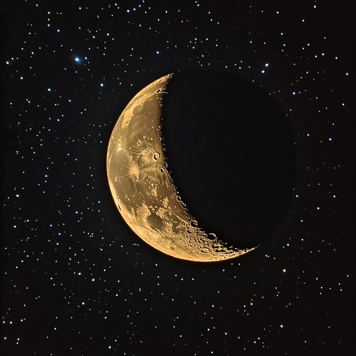

Earth's Moon is the fifth-largest moon in the solar system and the only natural satellite of Earth. It is about 3,474 kilometers (2,159 miles) in diameter and sits roughly 384,400 kilometers (238,855 miles) away from our planet. The Moon is a major influence on Earth's tides, climate stability, and the rhythm of night and day.
The Moon is about one-quarter the size of Earth, making it large compared with many moons in the solar system. It orbits Earth every 27.3 days and travels with our planet around the Sun. Even though it is much smaller than Earth, the Moon has enough gravity to create tides in the oceans and to help stabilize Earth's axial tilt over long periods of time.
As the Moon moves around Earth, different parts of its sunlit side are visible from our planet. These changing views are called lunar phases: new moon, crescent, quarter, gibbous, and full moon. The Moon's orbit is slightly tilted compared with Earth's orbit around the Sun, which is why we do not have eclipses every month.

The Moon's surface is covered with craters, mountains, valleys, and large dark plains called maria. These maria formed when ancient lava flows spread across the surface long ago. The Moon has no atmosphere to speak of, so there is no weather, no flowing water, and almost no erosion. Its surface is constantly bombarded by small meteoroids, which is why craters remain visible for millions of years.
Humans first landed on the Moon during NASA's Apollo missions between 1969 and 1972. Astronauts collected rock samples, set up scientific instruments, and helped us learn more about the Moon's history and origin. The Moon remains an important target for future missions, especially for science, resource use, and possible long-term exploration.
Back to Solar System